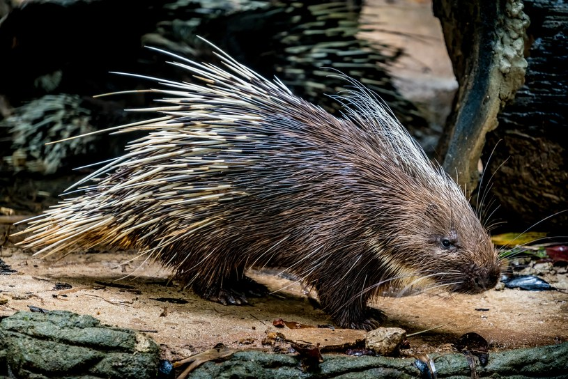
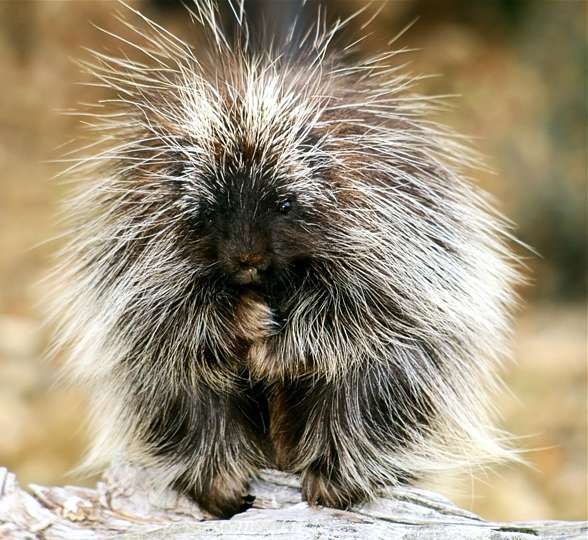
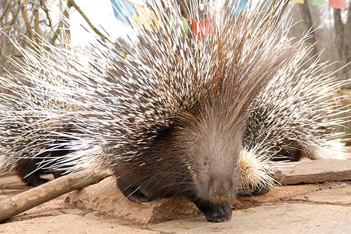

Pochodzenie
Ameryka Południowa (Brazylia, Wenezuela, Gujana)
Wielkość
35–60 cm + ogon 30–45 cm
Długość życia
12–17 lat (w niewoli nawet 20)
Tryb życia
Nocny, nadrzewny, spokojny
Cechy szczególne
Kolce ochronne i chwytny ogon
Nadrzewny, spokojny i ciekawski ssak o charakterystycznych kolcach

Ameryka Południowa (Brazylia, Wenezuela, Gujana)
35–60 cm + ogon 30–45 cm
12–17 lat (w niewoli nawet 20)
Nocny, nadrzewny, spokojny
Kolce ochronne i chwytny ogon
Jeżozwierz brazylijski ma gęste futro z kolcami ukrytymi pod włosiem. Jego ogon działa jak dodatkowa ręka, którą owija się wokół gałęzi. Jest powolny, ale bardzo zręczny podczas wspinania.

22–28°C
Nocny – aktywny głównie po zmroku
Zwykle cichy, czasem popiskuje
Może żyć samotnie lub w parze

Jeżozwierz brazylijski jest spokojny, ciekawski i powolny. Nie jest agresywny, ale w sytuacji zagrożenia stroszy kolce. Lubi wspinanie, eksplorowanie i przebywanie na wysokości.
Wymaga cierpliwego oswajania i spokojnego podejścia